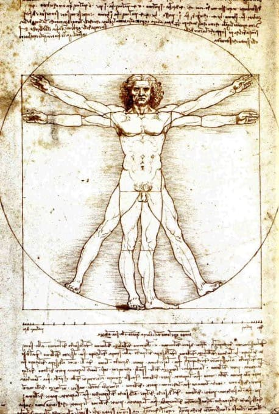

Kant on Autonomy and Human Rights
Are humans meant to be free?
If you like reading about philosophy, here's a free, weekly newsletter with articles just like this one: Send it to me!
It’s a common thing nowadays to be cynical about human beings — and when we look around, at politics, environmental destruction and social media, it seems indeed that human beings are not much more than technologically enhanced, vicious animals: monkeys with atomic bombs.
For Kant, human beings are special because they have autonomy, which means that they are able to freely decide how they want to act, even being able to act against their own interests or against their natural instincts. This autonomy is the basis for human dignity and human rights, in Kant’s view.
The theory of Darwinian evolution has been contributing to the view that we are just slightly more developed apes. Don’t worry, I’m a biologist myself, so I’m not going to question evolution. But the correctness of a theory is a distinct thing from its effects on the popular imagination. Older societies in Europe deeply believed that God had created humans in his image, and thus saw human beings as something special, a link between the animal kingdom and the sphere of the divine. In contrast, we today believe that we are just another animal — not different in principle from a dolphin, a dog, or even a worm.
The truth is that we share over 98% of our genes with chimpanzees, about 90% with cats and 85% with mice, but this biological fact does not do us justice.
Are we just another animal?
For example, if we go down this route, we lose an important justification for human dignity. And the special dignity of humans is sometimes used to explain human rights. We are special, we have an infinite value, each one of us, the argument goes. This is true of all humans, whether they are rich or poor, black or white, big or small. And this special value is why we should all have those special rights of freedom, of free speech, of being allowed to make our own decisions about our lives, why we should not suffer degrading treatment or torture.

You can see how the biological argument threatens this whole view. If I am essentially the same as a chimp, and 90% the same as a cat, then why should I have rights that chimpanzees and cats don’t have? There are two ways out of that problem: either I give up my human rights and consent to be treated like any other animal, or I give animals all the rights that humans used to have. The problem is that, in both cases, the human rights get diluted so much that they are, essentially, lost.

Leonardo daVinci, Vitruvian Man, c. 1490. Public domain.
A cat cannot have freedom of speech or religion. A cat might be forced into a sterilising operation. Nobody who would give cats more (animal) rights would question these attitudes. But if I see cats as essentially equivalent in rights to human beings, does this mean that humans also don’t deserve these freedoms? Can I then forcefully sterilise humans?
Human autonomy and human rights
It’s easy to see that this won’t end well. In fact, our modern understanding of human rights was shaped directly by the atrocities of the Nazis before and during the second world war. Our respect for these rights was strongest as long as people still remembered what they had fought for, and how a world without these rights looked.
Today, as the second world war and Nazi rule fade from our collective memory, we also tend to value these rights less. Might there not be cases where censorship is good? we might ask. Does freedom not have its limits if I don’t like what the other person is saying? Should we perhaps forcefully sterilise sex offenders? Should we take away the freedom of religion for those whose religion is different, or for those who seem to be a threat to our own beliefs?
The problem is that there is little to stop us on the way down along that route.
Which act of censorship is good and which is bad? Which religion should be respected and which not? Whose freedom of speech do I have to defend, and whose can I walk over?
If we do it this way, then human rights become a matter of taste, of negotiation, of alliances, and, finally, of social, political and financial power.
But there’s another way.
How? How can we claim that we are special, yet avoid invoking God’s likeness as a reason? How can we make sure that no human is ever mistreated, tortured, silenced, while at the same time accepting that we are, in the end, all biological organisms that stem from the same common ancestor, some cyanobacterium millions of years ago?
Human freedom according to Kant
We can look, the German philosopher Immanuel Kant (1724-1804) would say, at the unique ability that human beings have to make decisions about themselves.
When a lion is hungry, it will eat. If a hungry lion stands in front of you, and you don’t manage to get away, it will eat you, no matter who you are. The lion really doesn’t have a choice at all about that. Its instincts drive its behaviour, and it does not have the power to resist them. The same is true of ants that “sacrifice” themselves for the good of their colony: in truth, the individual ant does not have a concept of sacrifice, or the consciousness to make a decision about whether to give up its life or not. Whatever it does is preprogrammed into its genes and it cannot act against its programming.
Photo by Francesco De Tommaso on Unsplash
But we, says Kant, are different. We always have a choice. Our morality, our ethics, our laws, they ask us to obey their rules — but they can never force us. Our prisons, filled with people who acted against morality and laws, although they knew about them, are proof of the freedom of the human spirit.
When we obey the laws, it’s not because we cannot break them. It is because we want to obey them.
In this sense, every morally good act, every lawful behaviour, is the result of a free choice to be good, to act in this particular way. And even the most extreme pressures, even the danger of losing one’s life cannot really force a human being into submission. History is full of examples of people who willingly and clear-eyed sacrificed themselves for some cause they believed in. Those who died from hunger strikes in the hands of dictators. Those who were killed in prisons, those who were tortured but never silenced, those who did not repent, not submit to force, even when it cost them their lives.
And this, in the end, is the enduring proof that humans are different from animals.
Our ability to be free, to act as we believe, what Kant calls our autonomy, is what grounds and justifies our dignity as human beings.
And so we don’t need to believe that we are made in the image of God in order to be worthy, dignified and free. Because, as opposed to everything else on this planet, we are already made in the image of freedom itself.
Thanks for reading! Subscribe to never miss a post!